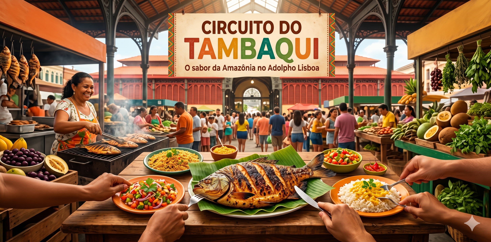
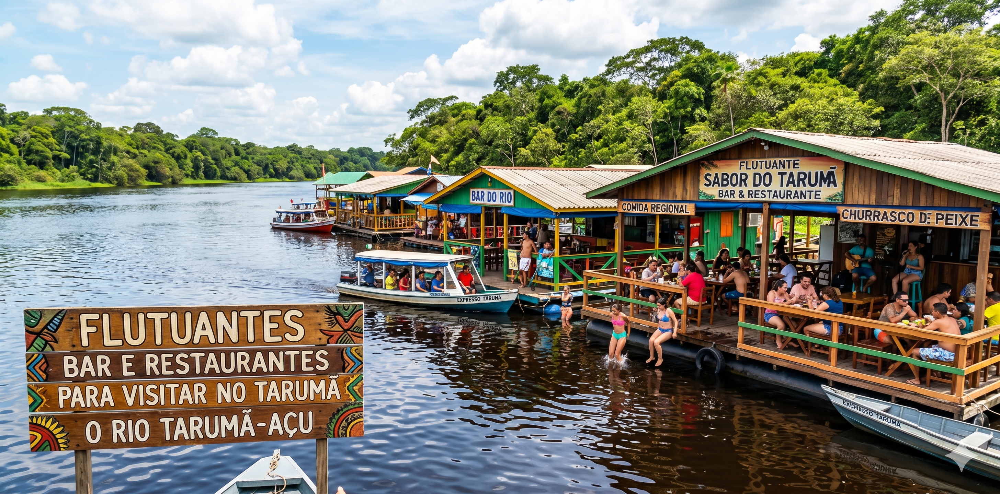

Destaque
Ópera no Teatro Amazonas: temporada 2026 promete emocionar
O mais importante palco da região Norte recebe espetáculos internacionais durante todo o mês de maio.
Ler mais
O mais importante palco da região Norte recebe espetáculos internacionais durante todo o mês de maio.
Ler mais
Evento reúne chefs locais no Mercado Adolpho Lisboa para celebrar o prato mais icônico do Amazonas.

Conheça os melhores espaços de lazer nas águas do igarapé mais famoso de Manaus.